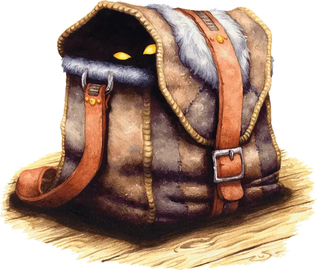

Сумка фокусов
Bag of Tricks
Чудесный предмет, необычный

Рекомендованная стоимость 400 зм
Эта сумка из серой, рыжей или бежевой ткани выглядит пустой. Однако если вы залезете рукой внутрь, то ощутите небольшой пушистый предмет.
Вы можете действием Магия вытащить пушистый предмет из сумки и бросить его на расстояние вплоть до 20 футов. Когда предмет приземляется, он превращается в существо, которое вы определяете броском по соответствующей цвету сумки таблице. Существо исчезает на следующем рассвете или когда его Хиты опустятся до 0.
Существо Дружелюбно по отношению к вам и вашим союзникам и действует сразу после вас с тем же значением Инициативы. Вы можете Бонусным действием указать, как будет двигаться существо и какое действие будет совершать в свой следующий ход, например, атаковать врага. Если вы не даёте ему указаний, существо действует согласно его природе.
Как только три пушистых предмета будут вытащены из сумки, её нельзя будет использовать снова до следующего восхода солнца.
Серая сумка фокусов
| 1d8 | Существо |
| 1 | Куница |
| 2 | Гигантская крыса |
| 3 | Барсук |
| 4 | Кабан |
| 5 | Пантера |
| 6 | Гигантский барсук |
| 7 | Лютый волк |
| 8 | Гигантский лось |
Рыжая сумка фокусов
| 1d8 | Существо |
| 1 | Крыса |
| 2 | Сова |
| 3 | Мастиф |
| 4 | Козёл |
| 5 | Гигантский козёл |
| 6 | Гигантский кабан |
| 7 | Лев |
| 8 | Бурый медведь |
Бежевая сумка фокусов
| 1d8 | Существо |
| 1 | Шакал |
| 2 | Человекообразная обезьяна |
| 3 | Бабуин |
| 4 | Топороклюв |
| 5 | Чёрный медведь |
| 6 | Гигантская куница |
| 7 | Гигантская гиена |
| 8 | Тигр |